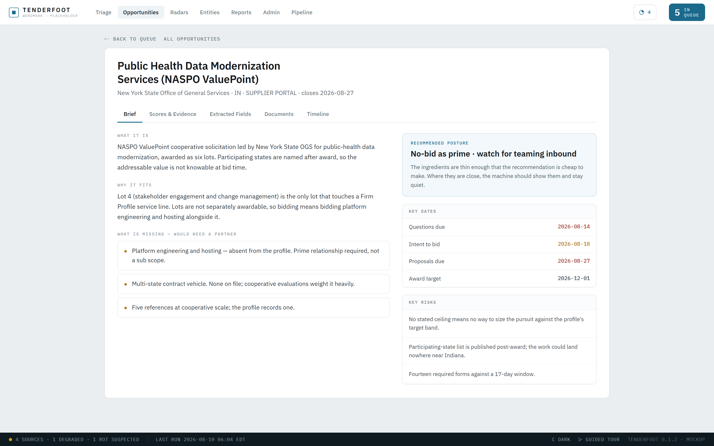
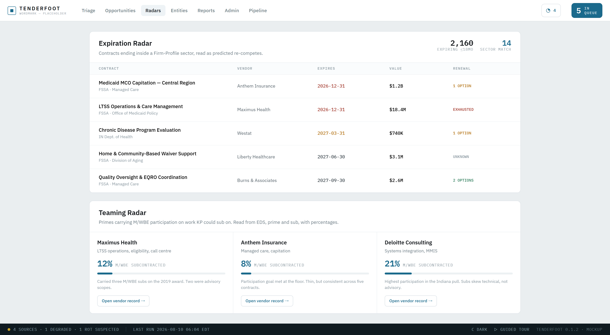
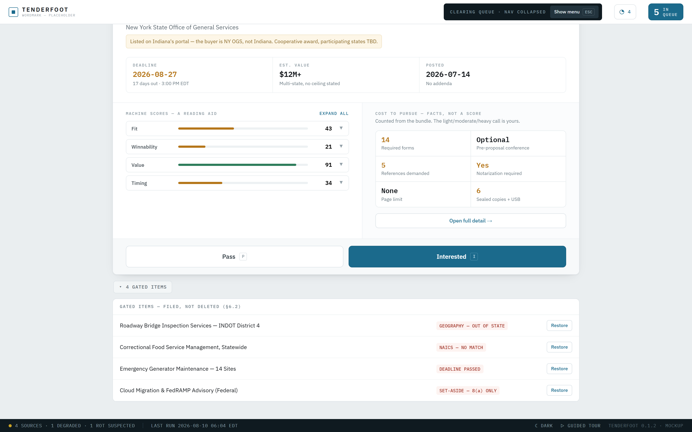
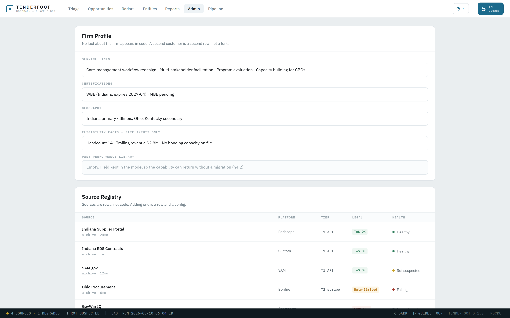

Tenderfoot — How it works
Tenderfoot
Find the work before it finds you.
Contract opportunity discovery
Built for Koehler Partners
Design prototype · August 2026
The problem
Four ways good work gets missed
None of them are anyone's fault. They are what happens when opportunity discovery lives in an inbox and a memory.
01
It is never seen
Qualified work is published, sits open for three weeks, and closes without anyone at the firm knowing it existed.
02
It is seen too late
By the time an RFP publishes, the incumbent has been positioning for months. The document is the end of the race, not the start.
03
It arrives buried
Portal alerts are overwhelmingly irrelevant. The signal is real, but it costs an hour a day to find and nobody has the hour.
04
Nothing is remembered
Decisions live in email. Six months on, nobody can say what was passed on, or why.
Measured, not estimated — from 24 months of real solicitations
9 of 61Indiana solicitations open on a single day that were plausibly Koehler work. The rest was stone, dog food, and walleye fingerlings.
38 daysAll that remained on the best-matching opportunity in the entire sample when it was finally found — by a person, reading a portal, by hand.
231Indiana contracts expiring on one day this December, including the whole Medicaid managed care book. Every one of them a re-compete nobody has announced yet.
What it does
Three moves, and only one of them is yours
Tenderfoot is not an alerting service and it is not an autopilot. It does the part that is tedious and mechanical, and hands you the part that needs judgment.
01
It collects — everything, from every source you switch on
Federal and state portals, contract registers, award data. One solicitation appearing on three sources becomes one record, not three. Nothing is filtered out on your behalf, because a filter's mistakes are invisible and unrecoverable.
02
It prepares — documents pulled, facts extracted, every claim sourced
The bundle is downloaded and read: deadlines, set-asides, required forms, references, page limits, whether the pre-proposal conference is mandatory. Every extracted fact carries a pointer back to the page it came from.
03
You decide — in about ten seconds, with a reason
One opportunity at a time. Interested or Pass, and a line about why. The reason takes a moment and becomes the thing the firm actually owns.
Tenderfoot never decides whether to bid. It removes every reason that decision is currently slow.
The daily driver
Clear the queue
One opportunity, full width, nothing competing for attention. The four facts that settle most decisions are above the fold: what it is, who is buying, when it closes, what it is worth.
The triage queue. Navigation collapses while you work — the queue is the only thing on screen. I for interested, P for pass, U to undo. Never touch the mouse.
Note the amber line
This solicitation is listed on Indiana's portal, but the buyer is New York. A keyword search on "Indiana" would have shown it to you as a local opportunity; a filter on state would have hidden it entirely. Tenderfoot shows it and tells you why it is odd.
Evidence
Every number shows its work
Scores are a reading aid, never a verdict. Open any one and it quotes the sentence that produced it, and names the file and section it came from.
Winnability is low here because cooperative awards favour vendors holding an existing multi-state contract vehicle — and the firm profile records none. That is a checkable claim, not an opinion.
Why this matters more than the score
A number you cannot interrogate is a number you either obey or ignore, and both are wrong. A cited number is one you can overrule in a second, with confidence, because you can see exactly what it read.
The brief
The ten minutes of digging, already done
What the work is. Why it fits. What is missing that would need a partner. Key dates, key risks, and a recommended posture that stays quiet when the evidence is thin.

Three tabs deeper sit the scores with their evidence, every extracted field with its confidence, the document bundle, and the timeline of every change since it was first seen.
Written to be argued with
"What is missing" is the most useful panel on this screen. It names the gap between the solicitation and the firm — platform engineering, a multi-state vehicle, a fifth reference — which turns a no-bid into a teaming call.
The headline feature
See the work a year before the RFP
Every contract the state holds publishes its end date. A contract ending is a re-compete beginning — and it is visible six to eighteen months before anything is advertised.

Below it, the Teaming Radar: primes already carrying M/WBE participation on work the firm could sub on, with real percentages read from filed contract records.
This screen is not a mockup of an idea — the data is already collected
2,160 Indiana contracts expiring inside eighteen months, pulled from a public register of 204,439 contracts going back to 2005. No account, no licence, no scraping. The December cliff shown here is real, and the Medicaid managed care book is on it.
Recall
Rejected is not deleted
Anything ruled out is filed with the reason it was ruled out, and can be restored in one click. A rejection you cannot inspect is a mistake you will never find.

Out of state. No code match. Deadline passed. Set-aside ineligible. Four defensible reasons — and every one of them recoverable if the fact behind it was wrong.
Why this drawer exists — a real near-miss
The best-matching opportunity found in 24 months shipped a bundle containing three documents with two different deadlines. The correct date lived in the most generically named file; the document named after the solicitation carried a date three weeks early. Every obvious rule for picking the right file picks the wrong one. Acting on the stale date would have closed out the firm's strongest prospect three weeks before it actually closed — silently, with nothing to show it had happened.
Configuration
Your firm is a row, not a rewrite
No fact about Koehler Partners lives in the code. Service lines, certifications, geography, eligibility thresholds — all of it is data you edit, and all of it changes what surfaces tomorrow morning.

Below the profile, the Source Registry: every source with its platform, access tier, legal posture and current health. Adding a state is a row and a configuration.
Sources are the control
Turning a source on or off is the whole configuration of what you see. No hidden filter sits between a source and you.
Sources rot, visibly
A portal that quietly stops returning results is the worst possible failure. Health is tracked per source and a silence is an incident, not a calm week.
Where this stands
What is real today
This document shows a working design prototype. Being straight about what exists is worth more than a good impression, so:
- Done
- The data is real and already collected. 24 months of federal solicitations, every open Indiana solicitation, and 2,160 expiring Indiana contracts — with the public interfaces to keep pulling them found, tested, and documented.
- Done
- Every screen in this document is designed and built as a prototype, precise enough that the production system is built by reading it.
- Next
- The first release collects and prepares; it does not rank. Everything from every source you switch on, deduplicated, documents pulled, facts extracted — read in the order you choose.
- Later
- Judgment comes last, deliberately. Nobody yet knows how much these sources publish each week, and a scoring system designed against a guess would be designed against fiction. First measure, then decide.
The opportunities are already there. The only question is whether anyone sees them in time.
Everything in this document was produced from real solicitations and real contract records — genuine titles, genuine deadlines, genuine dollar figures. Nothing here is invented sample data, because invented data is neat, and neat data hides every problem worth finding.